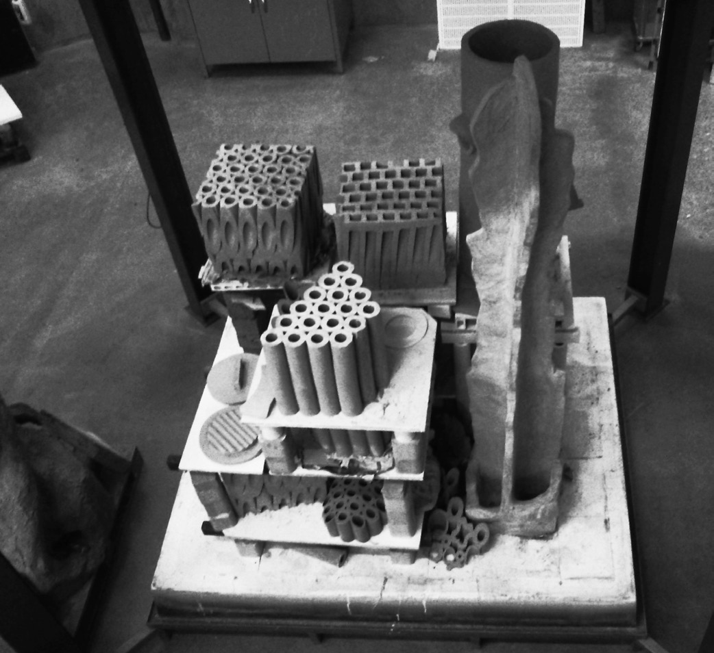
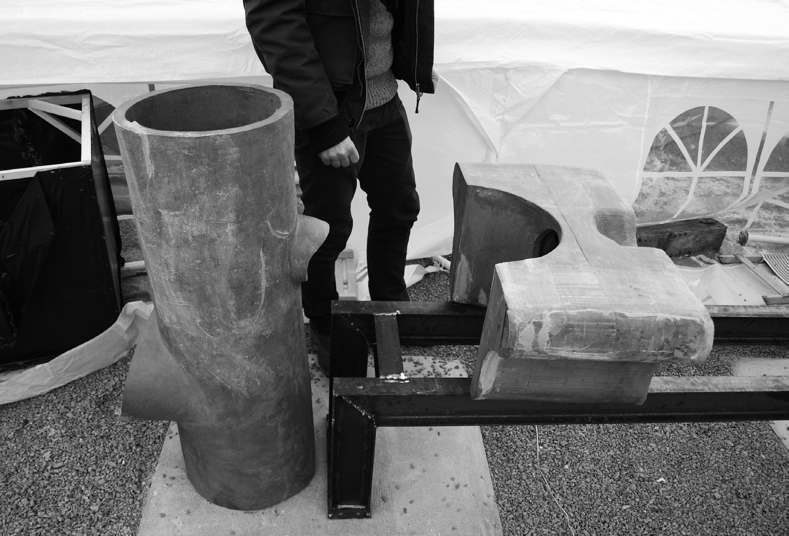
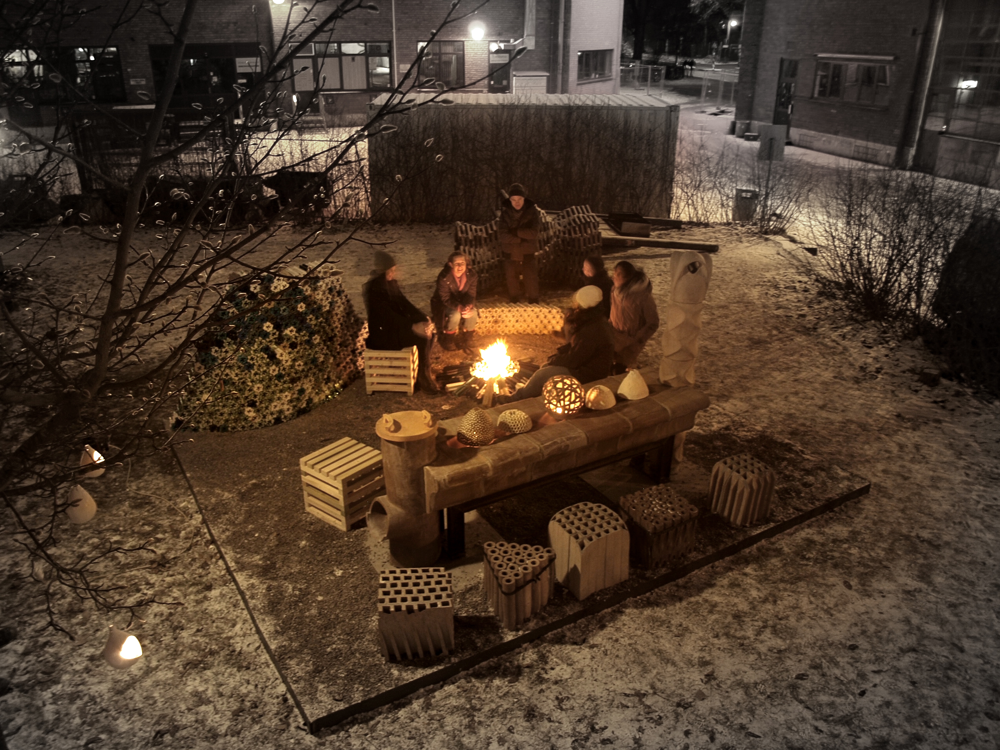
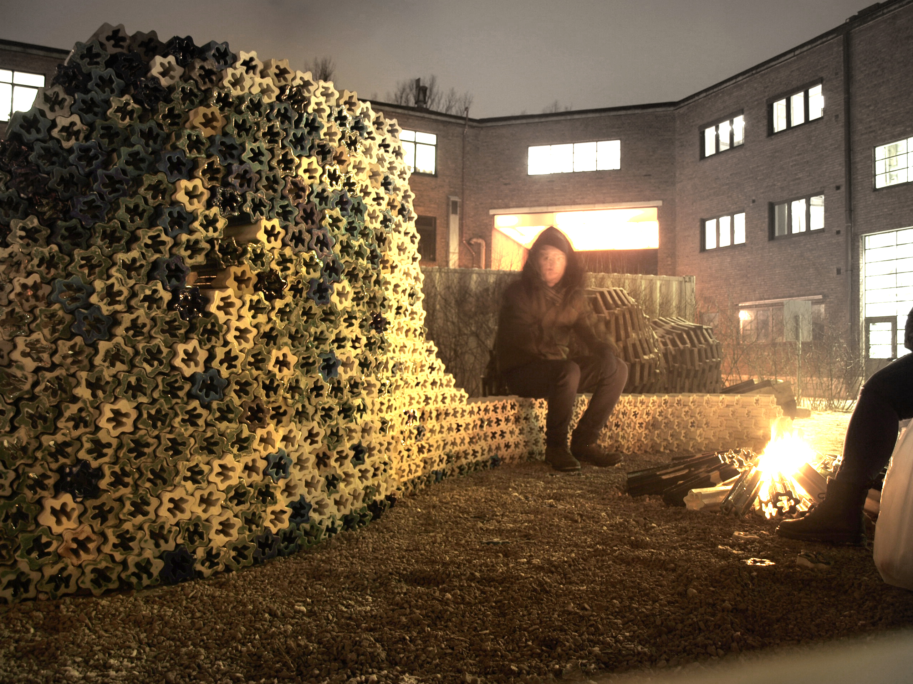
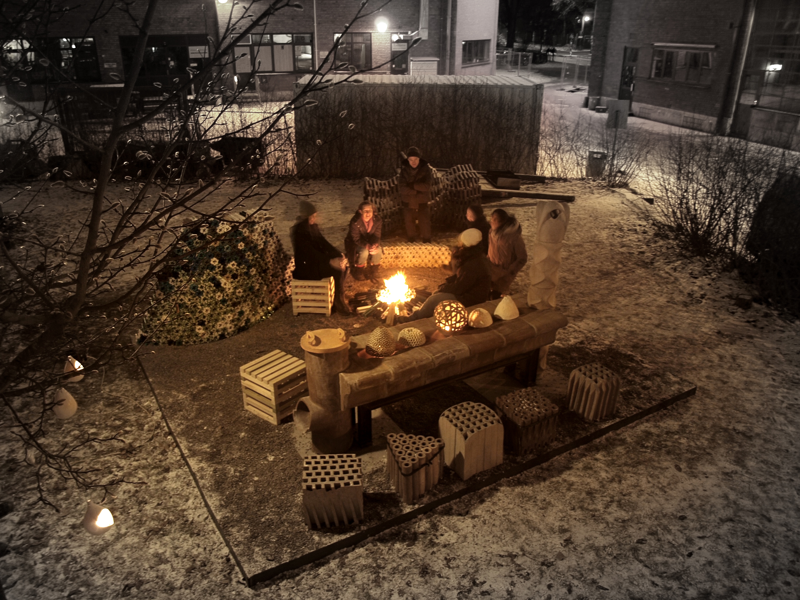
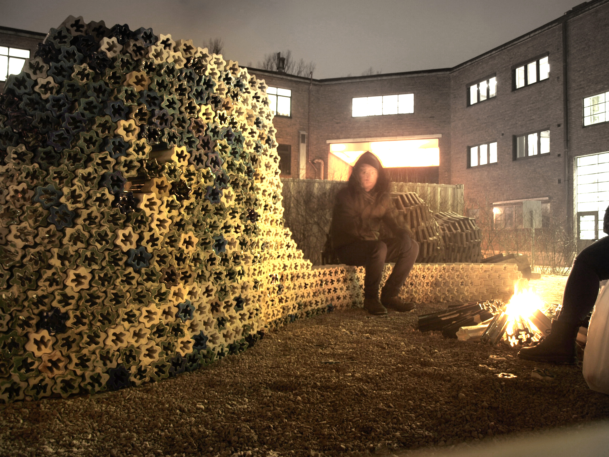

AHO Architecture and Ceramics
Oslo / Furniture / 25 m² / Børre Skodvin - Neil Forrest
A collaboration between AHO and the ceramics department of KhiO. We explored the possibilities of fired clay as a material to create a public meeting space for warmth and fire in the AHO yard. The challenge of working in a big team and experimentation of all sorts was key. The main feature is a table, warmed by a fire at one end and a chimney for exhaust at the other end. Research was done in material, by mixing different types of clay and aggregate then firing at multiple temperatures. Or in method of production, ranging from hand built, to extrusion, or using molds generated from CAD.
  


